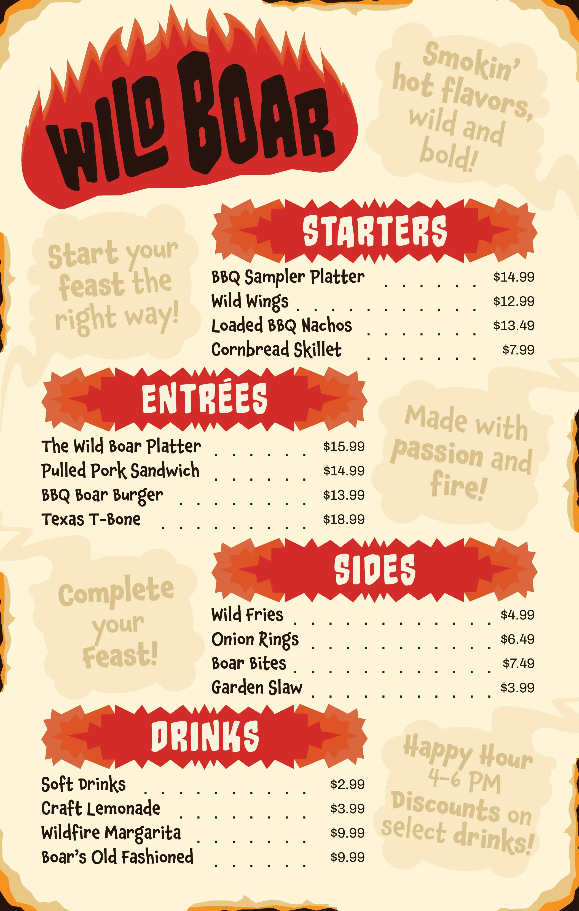

Print Design
Print Design
Project Brief
For this project the assignment was to design a full restaurant menu on a single page with name, cuisine, and typographic style all defined from scratch. A one-pager sounds simple, but it’s actually a hierarchy problem: with four menu categories, item names, descriptions, prices, and promotional call-outs all competing for the same real estate, the type system has to do the organizing that page count would normally do for you.
I built “Wild Boar” around a BBQ concept specifically because it gave me an excuse to push the typography hard. I used a fire-inspired display lettering for the restaurant name and section headers, played against a plainer, more restrained type for prices and item descriptions. The whole menu runs on five distinct hierarchy levels (logo, section headers, item names, descriptions, and prices), each with a consistent visual rule, so a diner can scan straight to what they want without the page ever feeling cluttered.
Final Design
